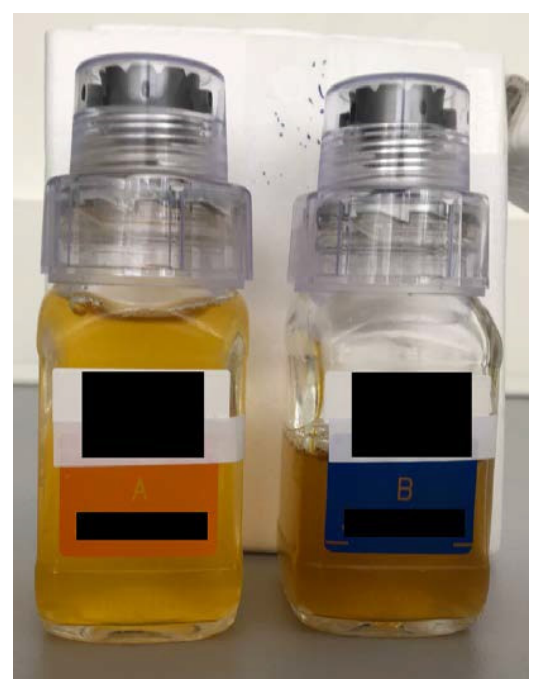
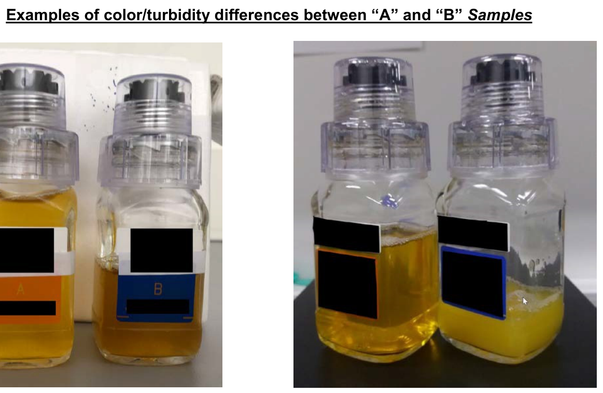

Technical Letters · TL14 (replaces TL2018/03)
Edition v2.0, 2018 (version 2.0) · effective 6 March 2018 · superseded
Retrieved on 25 November 2026 from https://www.wada-ama.org/sites/default/files/resources/files/tl14_difference_in_a_and_b_sample_urine_characteristics.pdf
Editions: v3.0, 2021 (current) · v2.0, 2018
p. 1
DIFFERENCE IN “A” AND “B” SAMPLE URINE CHARACTERISTICS
*The approval by the WADA Executive Committee is applicable only to Technical Letters issued after November 2019.
The World Anti-Doping Agency wishes to draw the attention of the Laboratories to the following issue that may affect Laboratory operations. This pertains, in particular, to significant differences in urine characteristics, related to color and/or turbidity, between urine "A" and "B" Samples, which are observed upon inspection at Sample receipt.
Upon reception, Samples shall not be rejected for analysis based on noted color/turbidity differences between the "A" and "B" Samples. Should such differences between the "A" and "B" Samples be observed, the following steps shall be conducted by the Laboratory in collaboration with the associated Testing Authority (TA):
- Before opening the "A" bottle, the Laboratory shall separately document the observed difference(s) and inform the TA in writing as soon as possible¹ ;
[It has come to WADA's attention that a single freeze/thaw cycle of both "A" and "B" Samples may address the difference in turbidity; therefore, storing the "A" and "B" Samples frozen overnight and then thawing may be an option before reporting the differences to the TA. It seems that this procedure, in some cases, may result in urines with identical turbidity].
- The Laboratory shall proceed to analyze the "A" Sample, for the requested test menu, bearing in mind to preserve as much "A" Sample volume as possible for additional investigation² , if necessary;
- The TA should investigate with the Doping Control Officers (DCOs) whether any observations or unusual circumstances occurred during the Sample collection procedure. In case of abnormality in the collection procedure, the TA should evaluate other Samples collected from the Athlete and, in addition, the Athlete should be targeted for further Sample collections;
- In the case of a Presumptive Adverse Analytical Finding (PAAF), the finding shall be confirmed and the result reported in ADAMS accordingly. The difference between the "A" and "B" Samples and any other relevant observation shall be recorded in the comments section of the Test Report. The TA shall conduct results management of the case taking into account the Laboratory analytical results and observations, and determine the next steps including the "B" Sample confirmation;
- The TA shall alert the associated Athlete Passport Management Unit (APMU) to investigate the Athlete's "steroid profile" with particular attention to this specific Sample.
¹It is recommended that the correspondence includes a picture of the "A" and "B" Samples (as provided in the appendix below).
²The TA and the Laboratory shall bear in mind the availability of the "B" Sample, which may be split for further investigations, if necessary
p. 2
*The approval by the WADA Executive Committee is applicable only to Technical Letters issued after November 2019.
Should you have any further questions, please do not hesitate to contact the WADA Science Department.


Examples of color/turbidity differences between "A" and "B" Samples
Retrieved on 25 November 2026 from https://www.wada-ama.org/sites/default/files/resources/files/tl14_difference_in_a_and_b_sample_urine_characteristics.pdf